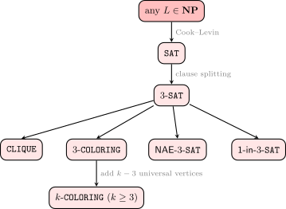
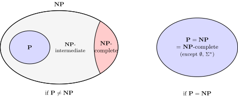

32 \mathbf{P} vs \mathbf{NP}
% noend hides “end for”; drop it to keep them
%
In this chapter we introduce polynomial-time reductions and \mathbf{NP}-completeness, the tools we use to compare the difficulty of problems in \mathbf{NP}. We start with the question that motivates the whole theory, whether \mathbf{P}= \mathbf{NP}, and with Impagliazzo’s description of what the world would look like under different answers. We then show that, if \mathbf{P}\neq \mathbf{NP}, there are problems in \mathbf{NP} that are neither easy nor \mathbf{NP}-complete (Ladner’s theorem). Finally, we explain why the diagonalization and simulation techniques from computability cannot settle the question (relativization).
32.1 \mathbf{P}\stackrel{?}{=}\mathbf{NP} and Impagliazzo’s five worlds
We know that \mathbf{P}\subseteq \mathbf{NP}: a polynomial-time decider is a verifier that ignores its certificate. Whether the inclusion is strict is the most famous open problem in theoretical computer science, and one of the seven Millennium Prize Problems of the Clay Mathematics Institute.
Informally, the question is: if a solution can be checked quickly, can it also be found quickly? Most researchers believe the answer is no, so that \mathbf{P}\neq \mathbf{NP}. One reason is the lack of progress: decades of work on \mathbf{NP}-complete problems in many different areas have never produced a polynomial-time algorithm for any of them. Another is that \mathbf{P}= \mathbf{NP} would make many tasks that seem to need creativity, such as finding a proof of a theorem whose proof is short, as easy as checking a solution.
There is also a third possibility: that the question has no answer in our usual axioms. Like the continuum hypothesis, the statement \mathbf{P}\neq \mathbf{NP} might be independent of \mathsf{ZFC}, meaning that it can be neither proved nor disproved from the standard axioms of set theory. Some partial results point in this direction. For example, Hartmanis and Hopcroft (1976) constructed oracles A for which the question “\mathbf{P}^A \stackrel{?}{=} \mathbf{NP}^A” is independent of \mathsf{ZFC} (we will see oracles at the end of this chapter). However, there is no evidence that the unrelativized question is independent, and most researchers expect it to be settled by an ordinary proof. Proving that it is independent would itself require techniques far beyond what we currently have.
\mathbf{P} versus \mathbf{NP} is a question about the worst case, and the two possible answers do not tell the whole story. In 1995, Russell Impagliazzo described five possible “worlds”, depending on how hard \mathbf{NP} is on average, and on whether cryptography is possible:
| World | What holds | Consequences |
|---|---|---|
| Algorithmica | \mathbf{P}= \mathbf{NP}, or \mathbf{NP} is easy in some practical sense. | Search and optimization problems in \mathbf{NP} become easy, and so does finding short proofs. Essentially no cryptography is possible. |
| Heuristica | \mathbf{P}\neq \mathbf{NP}, but \mathbf{NP} problems are easy on average. | Hard instances exist, but it is as hard to find them as to solve them. In practice, this looks almost like Algorithmica. |
| Pessiland | \mathbf{NP} is hard on average, but one-way functions do not exist. | The worst of both worlds: we can create hard problems, but we cannot use them to build cryptography. |
| Minicrypt | One-way functions exist, but public-key cryptography does not. | Private-key encryption, pseudorandom generators and digital signatures are possible, but parties who have never met cannot agree on a secret key. |
| Cryptomania | Public-key cryptography exists. | The world most researchers believe we live in, and the one modern cryptography relies on. Examples are RSA, which relies on factoring, and the post-quantum schemes based on lattices. |
The five worlds are listed from “most algorithms” to “most cryptography”. We do not know which one we live in. Even proving \mathbf{P}\neq \mathbf{NP} would only rule out Algorithmica.
32.2 Poly-time reductions and \mathbf{NP}-completeness
To compare the difficulty of two problems, we use the polynomial-time version of the many-one reductions from computability.
Definition 32.1 (Polynomial-time reduction) Let L_1 \subseteq \Sigma_1^* and L_2 \subseteq \Sigma_2^*. A polynomial-time reduction from L_1 to L_2 is a function f\colon \Sigma_1^* \to \Sigma_2^*, computable in polynomial time, such that for every w \in \Sigma_1^*, w \in L_1 \iff f(w) \in L_2. If such an f exists, we write L_1 \leqslant_p L_2 and say that L_1 reduces to L_2.
We read L_1 \leqslant_p L_2 as “L_1 is not harder than L_2”: to decide L_1, translate the input with f and then decide L_2.
Lemma 32.1 Let L_1, L_2 and L_3 be languages.
- If L_1 \leqslant_p L_2 and L_2 \leqslant_p L_3, then L_1 \leqslant_p L_3.
- If L_1 \leqslant_p L_2 and L_2 \in \mathbf{P}, then L_1 \in \mathbf{P}.
- If L_1 \leqslant_p L_2 and L_2 \in \mathbf{NP}, then L_1 \in \mathbf{NP}.
Definition 32.2 (\mathbf{NP}-hard and \mathbf{NP}-complete) A language L is \mathbf{NP}-hard if L' \leqslant_p L for every L' \in \mathbf{NP}. It is \mathbf{NP}-complete if it is \mathbf{NP}-hard and L \in \mathbf{NP}.
The \mathbf{NP}-complete languages are the hardest languages in \mathbf{NP}. If any one of them can be decided in polynomial time, then all of \mathbf{NP} can.
Theorem 32.1 Let L be \mathbf{NP}-complete. Then L \in \mathbf{P} if and only if \mathbf{P}= \mathbf{NP}.
So, to prove \mathbf{P}\neq \mathbf{NP}, it is enough to show that a single \mathbf{NP}-complete problem, such as \mathtt{SAT}, has no polynomial-time algorithm. The difficulty is to find a first \mathbf{NP}-complete problem. After that, transitivity does the rest.
Corollary 32.1 Let L_1 be \mathbf{NP}-complete, and let L_2 \in \mathbf{NP} be such that L_1 \leqslant_p L_2. Then L_2 is \mathbf{NP}-complete.
This gives the standard way to prove that a new language L is \mathbf{NP}-complete:
- Show that L \in \mathbf{NP}, by giving a certificate and a polynomial-time verifier.
- Choose a known \mathbf{NP}-complete language L', often 3\mathtt{SAT}.
- Give a polynomial-time reduction f from L' to L. Note the direction: from the known problem to the new one.
- Prove that w \in L' \Rightarrow f(w) \in L and that f(w) \in L \Rightarrow w \in L'. Proving only one direction is a common mistake.
The first \mathbf{NP}-complete language comes from the Cook–Levin theorem (Theorem 33.1), which shows that \mathtt{SAT} is \mathbf{NP}-complete. Every other problem in Figure 32.1 is then shown to be \mathbf{NP}-complete by a chain of reductions starting from it. Since Cook (1971), Karp (1972) and Levin (1973), thousands of problems from logic, graph theory, scheduling, biology and many other areas have been shown to be \mathbf{NP}-complete in this way.

A many-one reduction calls the “algorithm” for L_2 only once, at the end, and must return its answer unchanged. A Turing reduction (also called a Cook reduction) may call it many times and process the answers. With Turing reductions, \mathtt{SAT} and its complement \overline{\mathtt{SAT}} reduce to each other. Many-one reductions are finer: they can tell \mathbf{NP} apart from \mathbf{co}\mathbf{NP}. For example, if an \mathbf{NP}-complete language were in \mathbf{co}\mathbf{NP}, then \mathbf{NP}= \mathbf{co}\mathbf{NP}.
32.3 \mathbf{NP}-intermediate problems
This section contains parts that are more advanced. When you’ll get lost continue with the rest of the computability part of the course, and come back to this section on a second read.
If \mathbf{P}= \mathbf{NP}, the picture is simple. Every language in \mathbf{P} other than \emptyset and \Sigma^* is \mathbf{NP}-complete, since a reduction can solve the instance itself and output a fixed yes-instance or a fixed no-instance. If \mathbf{P}\neq \mathbf{NP}, then \mathbf{P} and the \mathbf{NP}-complete languages are disjoint subsets of \mathbf{NP}, and it is natural to ask whether together they cover all of \mathbf{NP} (Figure 32.2).
Definition 32.3 A language L is \mathbf{NP}-intermediate if L \in \mathbf{NP}, L \notin \mathbf{P}, and L is not \mathbf{NP}-complete.

Several natural problems are believed to be \mathbf{NP}-intermediate:
- Factoring. The decision version \{\langle n, k \rangle : n \text{ has a factor } d \text{ with } 1 < d \leqslant k\} is in \mathbf{NP}\cap \mathbf{co}\mathbf{NP}. So it is not \mathbf{NP}-complete unless \mathbf{NP}= \mathbf{co}\mathbf{NP}, and no classical polynomial-time algorithm for it is known.
- Graph isomorphism. Deciding whether two graphs are isomorphic is not \mathbf{NP}-complete unless the polynomial hierarchy collapses. In 2015, Babai gave an algorithm for it that runs in quasi-polynomial time, 2^{(\log n)^{O(1)}}, but no polynomial-time algorithm is known.
- Discrete logarithm. It has a status similar to factoring, and is also used in cryptography.
None of these is proved to be \mathbf{NP}-intermediate. A proof would in particular show that \mathbf{P}\neq \mathbf{NP}. What we can prove is that, if \mathbf{P}\neq \mathbf{NP}, some \mathbf{NP}-intermediate language exists.
Theorem 32.2 (Ladner, 1975) If \mathbf{P}\neq \mathbf{NP}, then there is a language L \in \mathbf{NP} that is \mathbf{NP}-intermediate: L \notin \mathbf{P}, and L is not \mathbf{NP}-complete.
The language \mathtt{SAT}_H is very artificial. Whether there is a natural \mathbf{NP}-intermediate problem, assuming \mathbf{P}\neq \mathbf{NP}, is still open.
32.4 Relativization
In computability, we proved that \mathtt{HALT} is undecidable by diagonalization. In complexity theory, we use the same technique to prove the time hierarchy theorem. It is natural to try it on \mathbf{P} versus \mathbf{NP}. This section explains why that cannot work.
An oracle Turing machine with oracle A \subseteq \Sigma^* is a TM with an extra tape, the oracle tape, and a special query state. When the machine enters the query state with a word y on the oracle tape, it learns in a single step whether y \in A. We write \mathbf{P}^A and \mathbf{NP}^A for the classes of languages decided by polynomial-time deterministic and nondeterministic oracle TMs with oracle A.
Diagonalization and simulation treat machines as black boxes: they run them, count their steps and flip their answers. All of this works just as well for oracle machines. Such arguments relativize: if they prove a statement about \mathbf{P} and \mathbf{NP}, the same argument proves it about \mathbf{P}^A and \mathbf{NP}^A for every oracle A. The next theorem shows that no relativizing argument can settle \mathbf{P} versus \mathbf{NP}.
Theorem 32.3 (Baker, Gill, Solovay, 1975) There are oracles A and B such that \mathbf{P}^A = \mathbf{NP}^A \qquad\text{and}\qquad \mathbf{P}^B \neq \mathbf{NP}^B.
So a proof that \mathbf{P}\neq \mathbf{NP} cannot relativize, since it would also show that \mathbf{P}^A \neq \mathbf{NP}^A. A proof that \mathbf{P}= \mathbf{NP} cannot relativize either, since it would show that \mathbf{P}^B = \mathbf{NP}^B. Any solution must use some property of computation that is lost when machines are given an oracle. Two other barriers of the same kind are known: natural proofs (Razborov and Rudich, 1994) and algebrization (Aaronson and Wigderson, 2008). Each of them rules out a large family of proof techniques, which helps explain why the problem is still open.